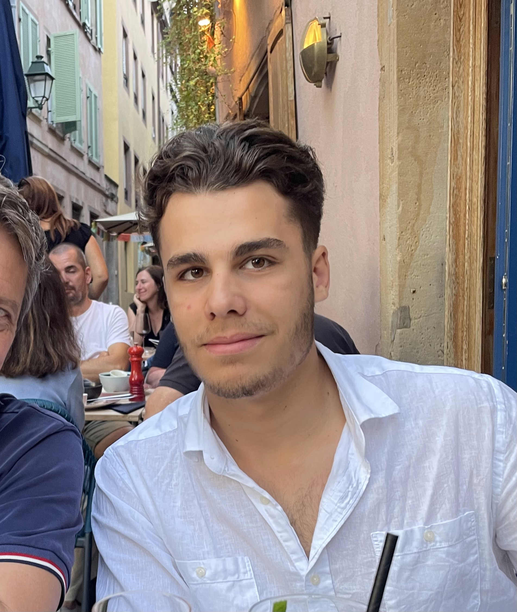

Grégoire Cendré
Engineering Student

Welcome to my personal e-portfolio, where I share my academic journey, international mobility, projects and future ambitions as an engineer.
Engineering Student
Welcome to my personal e-portfolio, where I share my academic journey, international mobility, projects and future ambitions as an engineer.